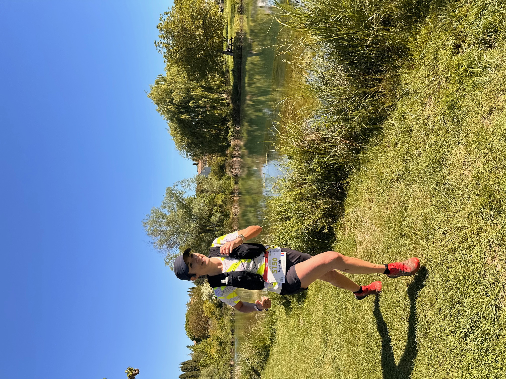
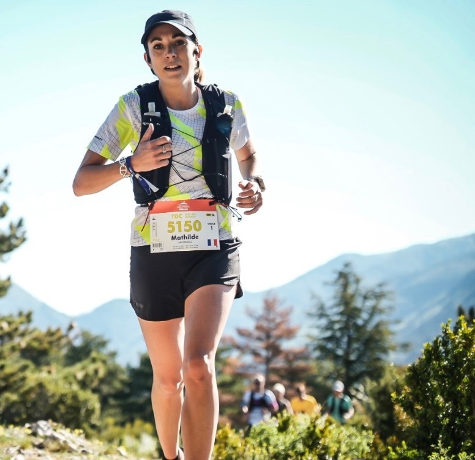
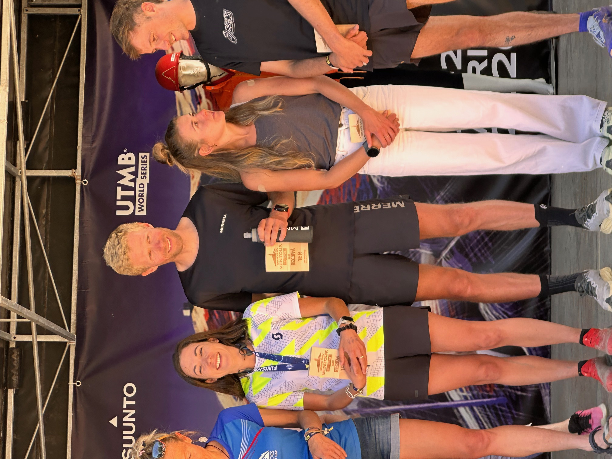
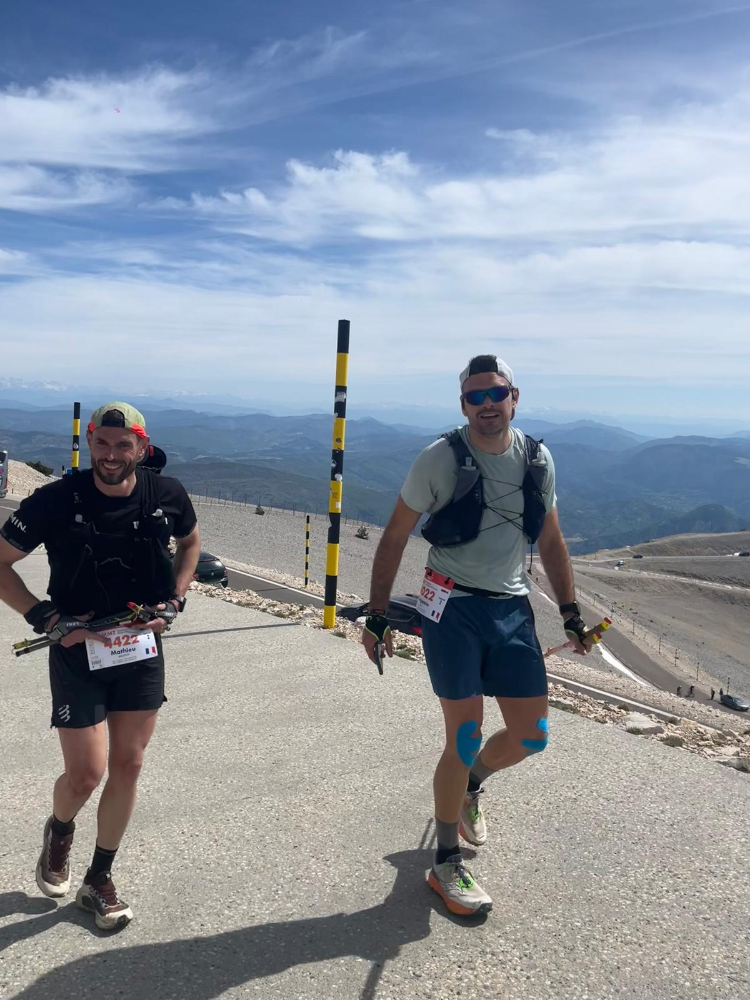
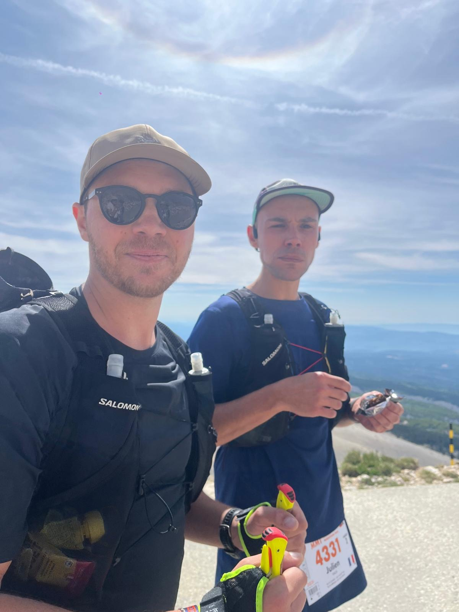
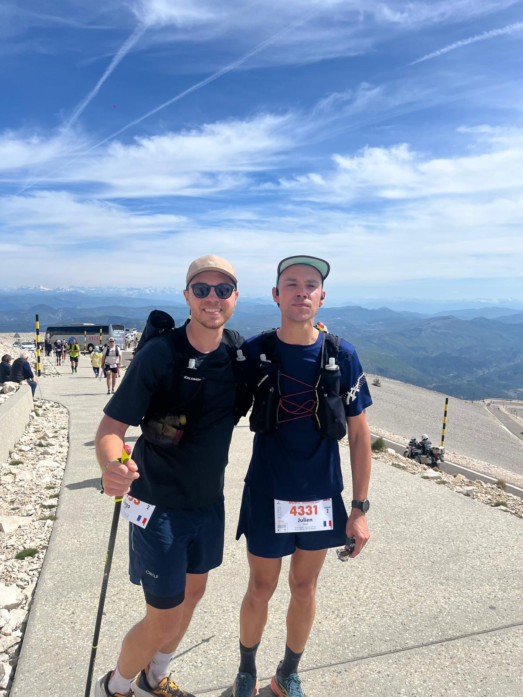

Le week-end dernier, l'association Mrun était représentée sur l'une des épreuves majeures du circuit UTMB World Series, le Grand Raid du Ventoux by UTMB, organisé à Malaucène. Trois athlètes Mrun ont pris le départ sur deux formats, dans des conditions météo idéales, sur un parcours réputé exigeant et technique. Un week-end intense, gravé dans les mémoires.
🥇 Trail des Coteaux — 20K
26 km / 1 100 m D+ — Samedi 8h30
Mathilde BAUDELOCQ s'est élancée samedi matin sous un soleil déjà haut, dans la tension électrique du sas de départ. Face à elle : un plateau féminin dense, un tracé exigeant entre vignes, sentiers caillouteux et passages techniques sur les contreforts du Ventoux.
Dès les premiers kilomètres, Mathilde affiche la couleur. Pas de fébrilité, pas de gestion frileuse : elle prend sa place au contact du groupe de tête féminin et n'en bougera plus.
À mi-course, au point culminant, elle est déjà dans le top 10 féminin. Et au lieu de subir la fin de course — comme c'est si souvent le cas sur ce format court et nerveux — elle accélère. Les derniers kilomètres sont avalés avec la même intensité que les premiers, dans un effort maîtrisé de bout en bout.
Franchir la ligne en 2h37, c'est plus qu'un chrono : c'est la confirmation d'un niveau qui ne cesse de monter. Mathilde s'offre une 1ʳᵉ place de catégorie, signe une 9ᵉ place sur 381 femmes et termine 124ᵉ au scratch sur 1 178 coureurs. Une performance qui force le respect, portée par une lucidité tactique remarquable et un mental d'acier.
Résultats — Mathilde Baudelocq
- Temps2h37
- Classement scratch124ᵉ / 1 178
- Classement Femmes9ᵉ / 381
- Catégorie1ʳᵉ 🥇



🏔️ Mistral Marathon Trail — 50K
51 km / 2 500 m D+ — Dimanche 6h30
Le dimanche, place au gros morceau. 6h30, le jour se lève tout juste, fraîcheur du petit matin sur Malaucène. Dans le sas du Mistral Marathon Trail, l'ambiance est plus grave : 51 kilomètres, 2 500 mètres de dénivelé positif, un passage par la station du Mont Serein et l'ascension jusqu'au sommet du Mont Ventoux à 1 909 m. Un vrai morceau de montagne.
Quatre coureurs au départ : Diégo DUCROS et Julien VALLA sous les couleurs de Mrun, accompagnés de Benoit MOREL et Benjamin PLUS, deux proches très impliqués qui pourraient rejoindre le club prochainement.
Décision prise dès la veille : on part groupés. Pas de bataille de chronos entre amis, on construit la course ensemble. Et c'est exactement ce qui se passe. La première grosse ascension vers le Mont Serein se fait au train, dans une cohésion parfaite. Chacun cale son rythme sur le groupe, on s'encourage, on partage les ravitaillements, on gère les coups de moins bien à quatre.
L'ascension finale vers le sommet du Ventoux est le morceau de bravoure de la course. Pente raide, terrain devenu lunaire au-dessus de la limite des arbres, soleil qui tape sur la pierraille blanche. Le mythe est là, brut. Les quatre Mrun basculent ensemble au sommet, à 1 909 m, après plusieurs heures d'effort. Un moment fort, de ceux qu'on garde longtemps.
C'est dans la longue descente qui suit que la course se dessine différemment. Benoit et Benjamin trouvent un rythme supérieur en descente et prennent progressivement de l'avance, lâchés en confiance sur les sentiers techniques. Diégo et Julien, eux, restent sur leur tempo, solidaires, sans céder à la précipitation. La descente du Ventoux ne pardonne pas l'erreur — ils le savent.
Benoit et Benjamin franchissent la ligne en 8h09, lessivés mais lucides, après une course propre et engagée. Diégo et Julien bouclent l'épreuve en 8h44, ensemble, comme partis. Une course longue, dure, technique — et qu'ils ont réellement aimée. Le sourire à l'arrivée en dit plus long que n'importe quel chrono.
Mention spéciale à Julien VALLA : 51 km, 2 500 m D+, la montée et la descente du Ventoux… bouclés sans bâtons. Une performance qui mérite d'être soulignée, par exigence sportive autant que par caractère.
Résultats — Mistral Marathon Trail
- Benoit MOREL & Benjamin PLUS8h09
- Diégo DUCROS & Julien VALLA8h44



Le mot du Président
Un week-end qui résume parfaitement ce qu'est Mrun : exigence sportive, progression individuelle, mais avant tout esprit collectif. Mathilde a montré le visage du haut niveau ; Diégo, Julien, Benoit et Benjamin ont montré celui de la cordée — celui où l'on franchit ensemble les sommets avant de se laisser libre cours sur la descente. Bravo à tous. La suite s'écrit déjà.
Retour aux communiqués